Caches can say NO. Only the database can say YES.
Flash-sale e-commerce under extreme concurrency: 100 units, 10,000 concurrent Buy clicks, peak traffic up to 500k req/s. SALESTORM’s unique factor is the five-tier Cache-Hit Ladder — L0 browser → L1 CDN (SOLD_OUT) → L2 in-process → L3 Redis (100 tokens in 16 salted sub-pools + idempotency) → L4 Postgres (the only place a sale commits).
Simulation: 10,200 requests (200 duplicates). Safe design sold exactly 100. Naive counter sold 650. 415 invariant checks, 0 violations.
Debounce Buy, cache static assets. Cannot sell a unit.
Pages + global SOLD_OUT flag at the edge. Cannot sell a unit.
Hot product / sold-out flag per pod + singleflight. Cannot sell a unit.
100 admission tokens in 16 salted sub-pools + idempotency. Cannot sell a unit.
Unit rows + SKIP LOCKED. The only place a sale commits.
Sold 100 · max 1 charge/customer · 415 checks · 0 violations · 107 DB hits of 10,200
Sold 650 (oversold by 550) · write-skew under concurrency · invariants FAIL
Draw.io exports from HLD, LLD, Database, and screenshot pack. Click any image to enlarge.
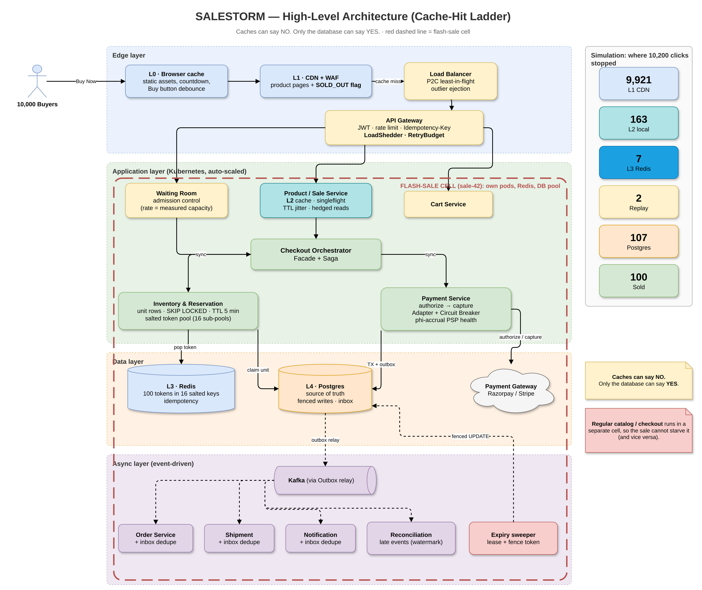
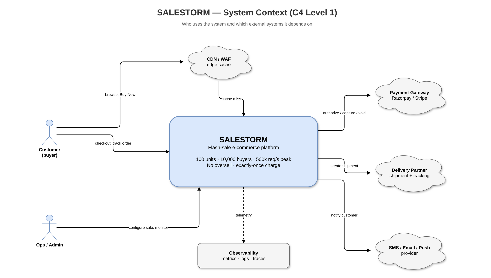
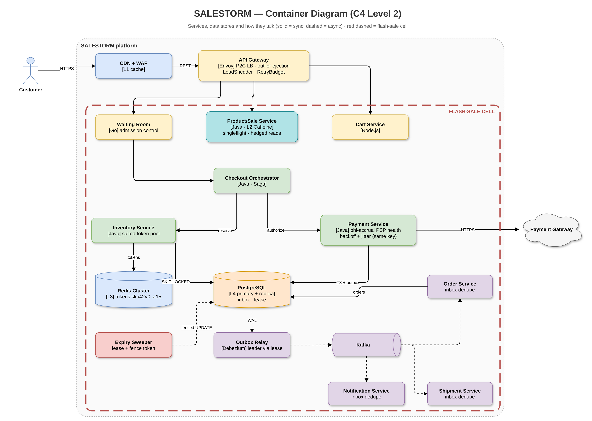
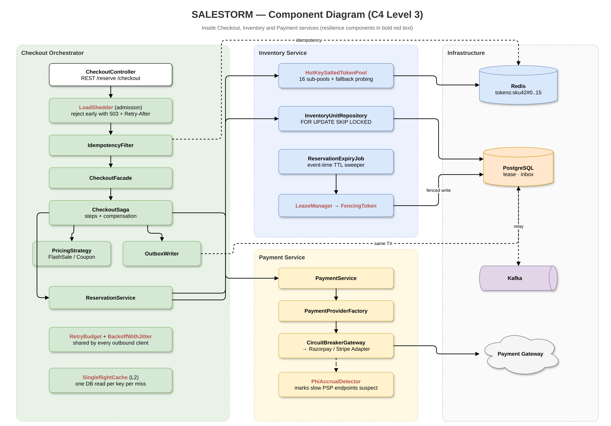
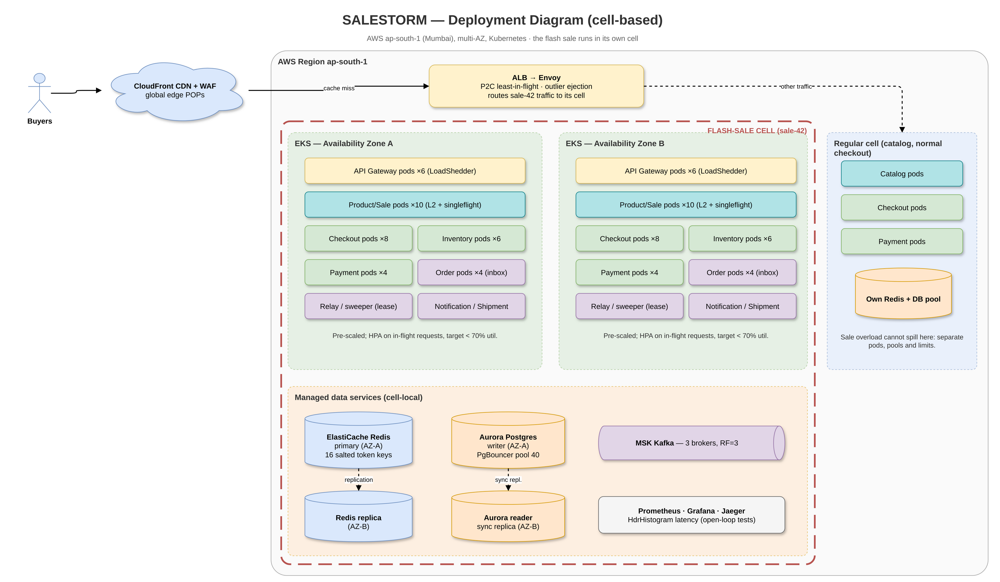
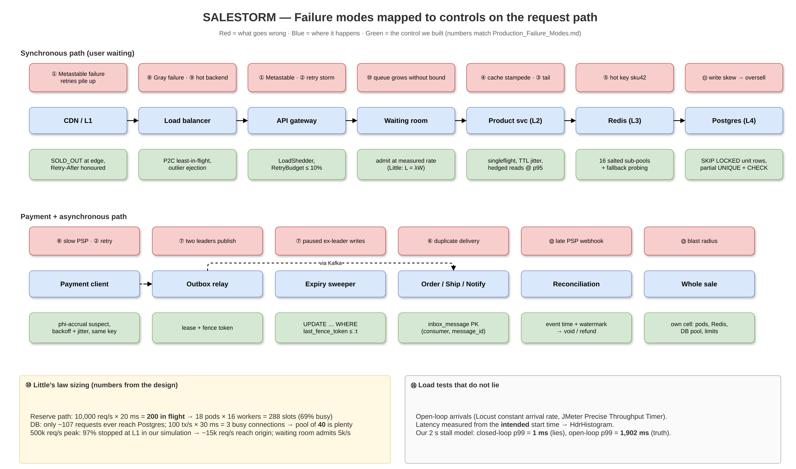
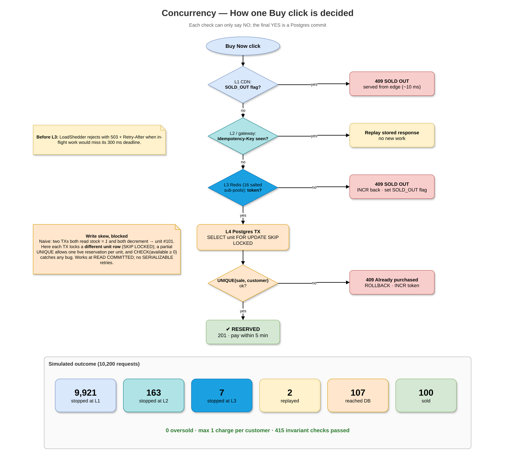
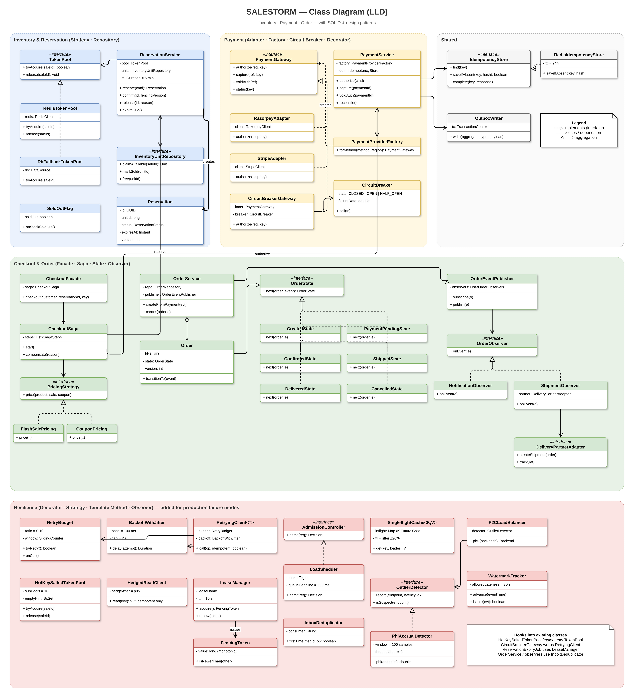
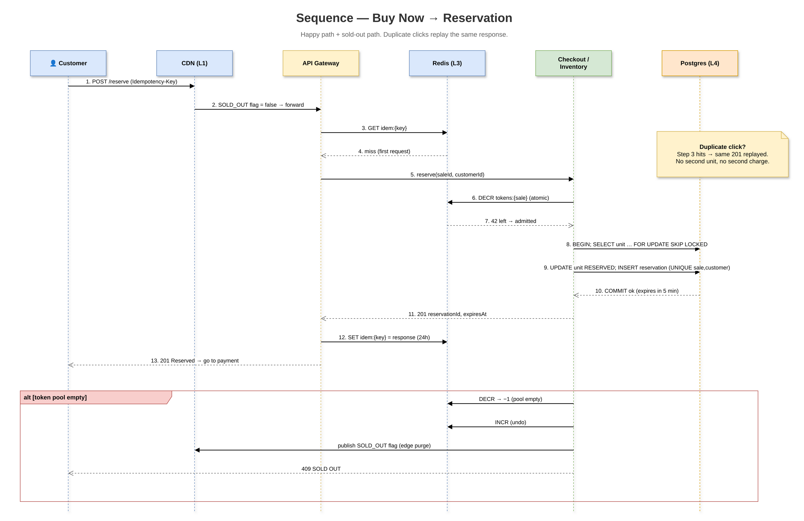
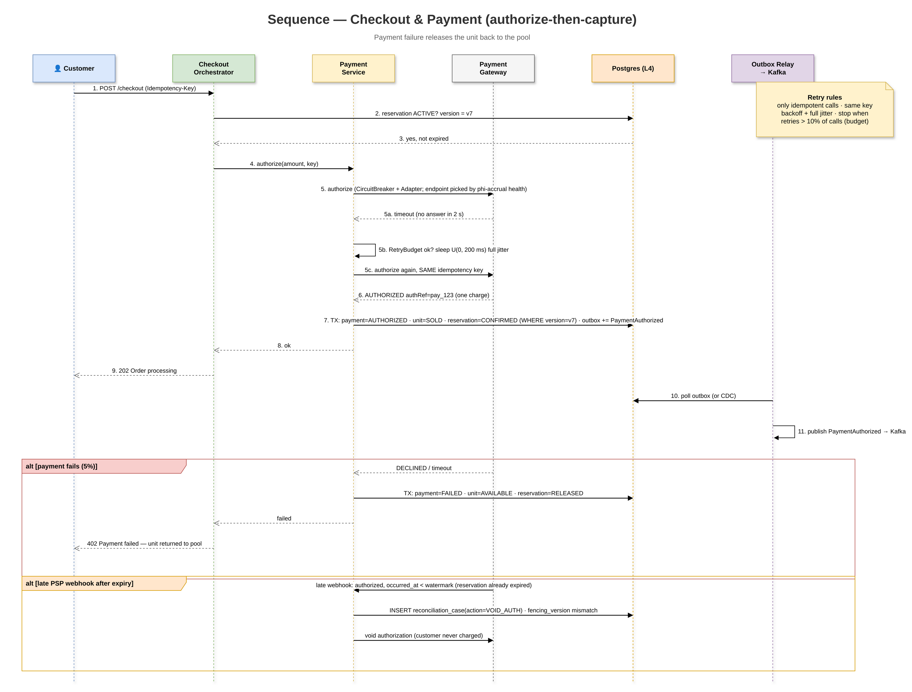
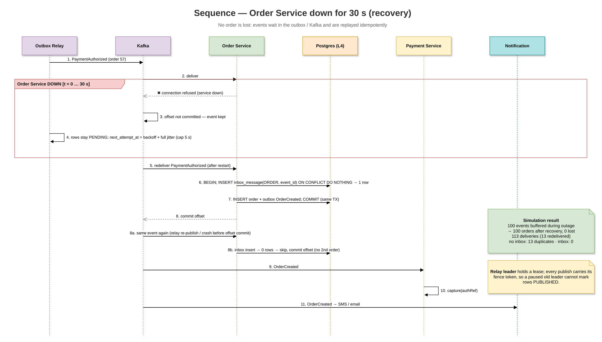
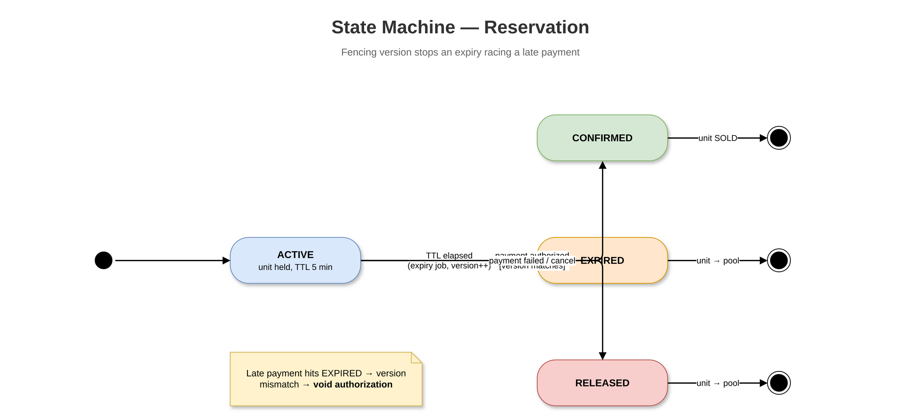
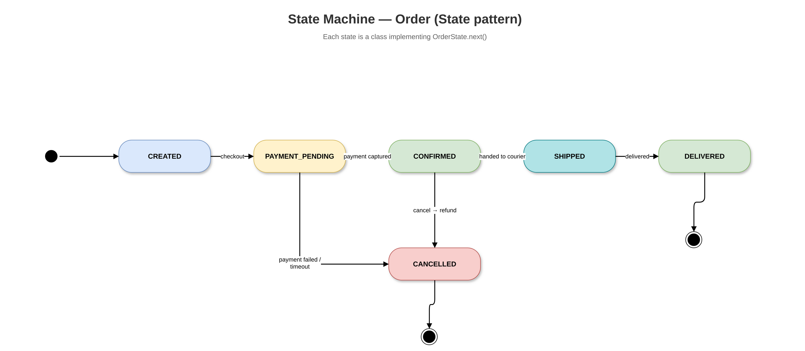
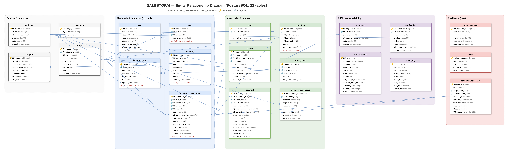
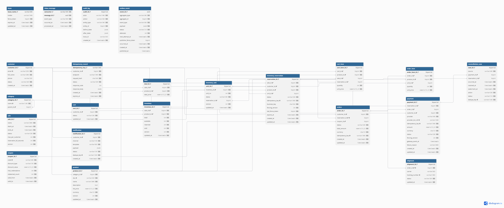
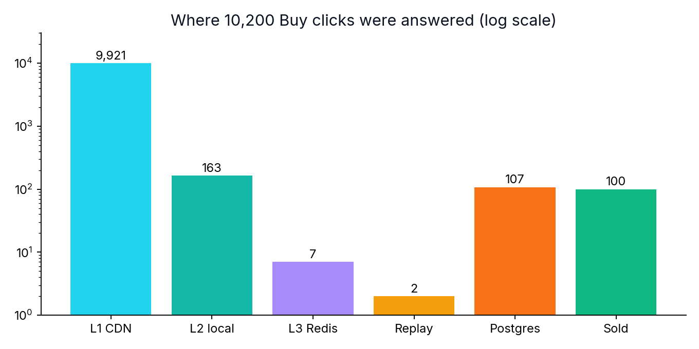
Real numbers from resilience_sim.py (seed 42) and design notes.
Source: 02_HLD/Production_Failure_Modes.md · output:
resilience_output.txt.
| # | Failure mode | How it hits SALESTORM | Our control | Evidence |
|---|---|---|---|---|
| 1 | Metastable failure | 2 s Redis failover → minutes of timeouts as retries fill the queue | Admission + load shedding + retry budget | [sim] naive never recovers; controlled recovers in first second · goodput 16.7% → 97.2% |
| 2 | Retry storm | 10,000 phones retry Buy every 100 ms | Idempotent retries only, full-jitter backoff, 10% retry budget | [sim] 4.26× vs 1.01× load amplification · attempts 2,045,760 → 483,560 |
| 3 | Tail latency amplification | One slow product replica makes every page slow | Hedged reads at p95 (reads only); no sync fan-out on Buy | design |
| 4 | Cache stampede | Stock-status key expires; 2,000 requests hit Postgres at once | Singleflight + TTL jitter | [sim] 2,000 DB reads → 1 |
| 5 | Hot key | tokens:sku42 hits one Redis shard |
16 salted sub-pools, fallback probing, local empty hints | [sim] max 57 ops/key vs 10,000; 100 tokens granted; 0 left |
| 6 | Duplicate delivery | Kafka redelivers PaymentAuthorized after outage | Outbox + inbox table at each consumer | [sim] 13 duplicates → 0 · 113 deliveries → 100 orders |
| 7 | Split-brain leader | Paused sweeper wakes and releases a unit someone just bought | Lease with monotonic fencing token checked by DB | [sim] 5 stale writes applied → 5 rejected; 3 buyers lost → 0 |
| 8 | Gray failure | PSP answers health but takes 8 s to authorize | Health from real traffic, outlier ejection, phi-accrual | design |
| 9 | Unbalanced backends | Round-robin keeps feeding a pod stuck in GC | Power of two choices on in-flight count | design |
| 10 | Wrong capacity numbers | Pools sized by guess: starved or thrashing | Little’s law sizing, < 70% utilization | design math · ~3 busy PG connections; pool of 40 |
| 11 | Write skew | Two TXs both read “1 left” and both sell → unit #101 | Unit rows + SKIP LOCKED + partial UNIQUE + CHECK | [pg]/[sim] safe sold 100; naive sold 650 |
| 12 | Event time vs processing time | Late PSP webhook after reservation expired | Event time + watermark; late events → reconciliation | design |
| 13 | Blast radius | Sale traffic starves normal catalog/checkout | Sale runs in its own cell | design |
| 14 | Coordinated omission | Load test says p99 = 1 ms while users wait 2 s | Open-loop arrivals, intended-start latency, HdrHistogram | [sim] closed p99 1.0 ms vs open p99 1,902 ms |
Every hackathon-brief tool has a matching artifact in the repo.
Ten ADRs in 10_ADR/.
In-browser toy model of 10,000 buyers racing for 100 units. Labelled as a browser demo (not the Python sim). Shows tier counts and “exactly 100 sold”.
Waiting for run…
Demo approximates ladder absorption; authoritative numbers come from simulate.py / results.json.